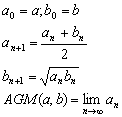

算術幾何平均
程式編寫日期: 2008年2月29日
程式可以計算兩個正實數的算術幾何平均 (Arithmetic-Geometric Mean)。
參考公式:

程式 (34 bytes，使用記憶A及B)
?→A: ?→B: While A - B: √(AB→B:
2-1( A + B2÷A→A:
WhileEnd: A
例題: 計算兩數 2及3的算術幾何平均值。
按 Prog 1 再按 2 EXE 3 EXE (顯示答案為2.474680436)
返回 CASIO fx-50FH、fx-3650P II、fx-50FH II及fx-50F PLUS 程式集